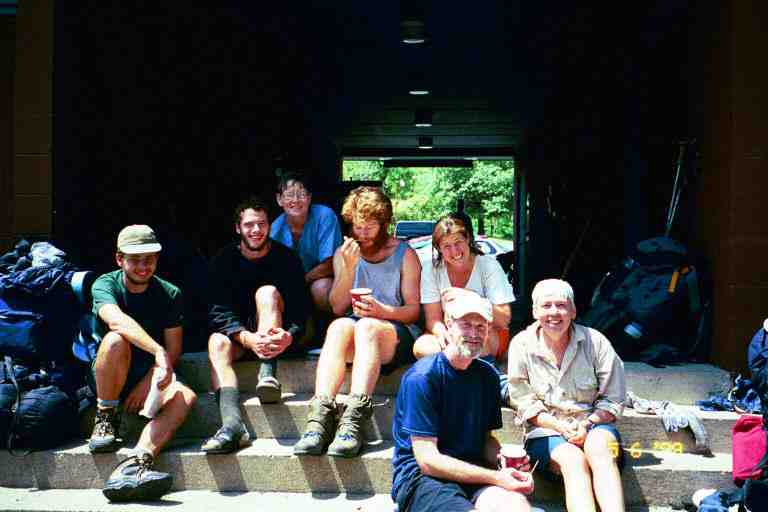

The next section of trail is through Shenandoah National Park in north-western Virginia. Maps show the park as a narrow north-south strip. The trail through the park is 107 miles long and covers its entire length. The trail was originally situated on the crest of the Appalachian range but was displaced when the Skyline Drive was built, and it now crosses that road about 50 times. Because of the road, and the stores and restaurants situated along its length, this is a very civilized section of our adventure. We sometimes hiked with the roar of motor bikes and motorhomes in the distance. On the other hand, the scenery is spectacular with great views from the mountain tops and with lush vegetation all around us. We still spent most of the day hiking in the woods and climbing mountains, although the climbs were mostly gradual. It was very hot, which made for uncomfortable hiking and difficult sleeping. And my feet were still hurting.
A major difference with the rest of the trail are the signs on the trail in the park. At trailheads, road crossings and trail junctions we would find a 42 inch concrete 6 by 6 post with a half inch wide metal strip wrapped tightly around it near the top. On one or more sides of the post, we would find distances and arrows embossed into the metal strip, indicating the location of side trails, huts, etc. As you can imagine the writing is very small and we had to look closely to read them. Some hikers did not notice that these were sign posts and missed the first hut.
In the Shenandoahs, the shelters are called huts. The Park regulations require that hikers in the backcountry stay in the huts or camp close by, if the huts are full. (I believe that people can also camp in other areas but there are complicated rules about the distance that they must be from the road and the trail). With one exception, the huts are about 13 miles apart which results in the hikers staying with the same group for most of this section. We were lucky to meet up with a great bunch of people at the first hut. We would camp together every night and, because the daily distance was very manageable, we would take long breaks together at restaurants and stores to relax and get away from the oppressive heat. We would sit in the shade and eat ice cream and have pop or beer and maybe buy a burger and some snacks.
I have said a number of times before that the highlight of our trip was the people that we met. This is especially true in this section where a great sense of camaraderie developed between the thru hikers, a number of whom were close to our age. This was a wonderful part of our trip. Here is a quote from JILEBI who was a few days ahead of us going through the park. I took it from her entry for her last day in the park. ***"There were two reporters at the shelter (Gregg and David) and they "interviewed" us. It was an interesting exercise to verbalize my thoughts about my hike to a stranger. We talked about the strong friendships that are formed almost instantaneously between thru-hikers; the amazing spirit of helping each other out and the complete trust we have of one another. These are the things that I seem to take for granted these days. " *** (http://trailplace.com/c99journals/315james/315james_index.html)
***********************
We took a taxi back to the trail on the morning of June 3. We walked a short distance along Skyline Drive and then took the trail into the woods up the side of the mountain. This was the 835 mile mark. Within a mile we came to a side trail which I had to take back down to the road to complete self-registration forms, while MA waited with our packs. Camping is free but we were required to register by completing forms, estimating our stay. The forms are to be tied to the back of our packs. It was fortunate that we did this, because we met a ranger on the trail a few days later who checked our forms.
At the 5.5 mile mark we came to Bear Den Mountain where there was a communication tower and complex. Tractor seats were stuck in the ground allowing hikers to sit and look out over the gently sloping hills and the grassy valley below. We continued on down the slope and stopped a little further on in the dry long grass for a break and tasted some berries and tried to find a bush to hide behind. A very peaceful spot to sit as we watched a woman in the distance walking slowly up a dirt road that wound its way up to the communication complex. At the 7 mile mark we came to the 0.3 mile trail leading to Calf Mountain Hut where we would spend the night as the next shelter was 13 miles further on.
**************
At the shelter we met a young 18 year old hiker named CHIEF NO PECS who was lying around reading, waiting for his mother to catch up. We were later joined by his mother (MOM), as well as POTS, SMOKEY JOE, MR MISSOURI, and HAIRY STRAWBERRY and TOEJAM with their dog ZEUS. We were with this group and a few others until the end of the park and with some even to Harper's Ferry.
MOM got her name when she had become separated from her son and he was asking hikers if they had seen his MOM. She was a lady from South Carolina in her early fifties. CHIEF was the youngest of her 11 children. She had constant foot pain, mostly from blisters, and MA shared some of our Moleskin and Compeed with her over the next week or so. She was determined to finish the trail despite her foot problems, and she and CHIEF did so at the end of September. There was a little confusion having MA and MOM hiking in the same group.
CHIEF NO PECS was always looking for his mother or vice versa. MOM was often ahead of him as he sometimes would slow down and spend time reading at a shelter or stay an extra day in town. One time it took him three days to catch up and she would be leaving notes for him in the shelter registers. He was once delayed looking for a tent pole that he had lost. It eventually turned up in his pack.
MR MISSOURI was likely in his late twenties. He stayed with our group through the park but then increased his speed and finished on September 1, according to an email I received from him with a picture of him on the summit of Katahdin. He was shy and quiet but got along with the group. MOM tended to baby him. A few days into our trip through the park he lost the large Canon camera that he was carrying. He emptied his pack completely looking for it without success. He placed entries in shelter registers and eventually ordered a new camera by phone. A few days later he found the camera in the bottom of his bag. His initial reaction was to accuse someone of playing a joke on him but no real answer was ever found.
I have previously introduced the other hikers here.
**********************
The next day we walked through a four mile burnt section which was the result of a control burn the month before that got out of hand. The smell of smoke still lingered in the area. The high canopied trees were unaffected as were a lot of the mountain laurels but the undergrowth was gone. There were fresh blades of grass poking through the blackened soil.
That night we stayed at Blackrock Hut which was down a steep 0.2 mile side trail. SUNSHINE EAST joined us here with the same hikers as the previous night. He is the man who was found unconscious at Woodshole hostel. Even though the shelter was not full he camped among the trees not far from the shelter as did TOEJAM and STRAWBERRY (who did so because they did not want to have their dog in the shelter).
Early the following day we stopped for a break with TOEJAM and STRAWBERRY at a picnic table next to the Skyline Drive at Browns' Gap. There were often tables at the road crossings in the park. They were nice to have but did remove the wilderness experience. This was the day of our first stop at a park tourist facility. The trail contoured the Loft Mountain Campground but we took a short trail into the campground and walked down the paved campground road and sidewalk to the camp store. On the way, we came upon a rattlesnake crossing the sidewalk, our first one of the trip. At the store, we bought a few supplies and some pop and a container of Shenandoah brand ice cream each. I am attaching a picture taken on the steps of the store. Left to right are MR MISSOURI, CHIEF NO PECS, MOM, HAIRY STRAWBERRY (eating ice cream), TOEJAM, SMOKEY JOE and MA.

We then walked down a nature trail to the Loft Mountain Wayside Grill, a fast food outlet on Skyline Drive, where we had shakes and fries in an establishment full of tourists. It felt strange being in this tourist world of high prices and inefficient service. We went on to Pinefield Hut that night for a total of 13 miles.
SMOKEY JOE, POTS and SUNSHINE EAST went a further 8 miles to the following hut. There would be no real advantage since they would only be doing 13 the next day and we would be doing 21 to end up at the same spot. This was SMOKEY JOE's first 20 plus mile day. He had said that he really did not want to do big days and usually did not go more than 15 miles. He is a very relaxed person whose pace suits his personality. He is tall with long legs and appears to be strolling as he hikes but covers lots of distance.
The next day was again very hot but as I said we did 21 miles. Late in the afternoon, less than a mile from our destination, we came to Lewis Mountain Campground. Rather than contour the campground we cut through it and came to the camp store where we found SMOKEY JOE, POTS, and SUNSHINE EAST sitting out front, relaxing, eating junk food and drinking beer. We had a couple of 50 cent beers, some snacks and then bought microwaveable stuffed pastries which we heated. We spent over an hour here relaxing and enjoying the company.
On the way back to the trail through the campground we came upon FREE SPIRIT and CREEPER who were staying here in MAULA's camper truck. MAULA was slackpacking them. This might have been one of the days that FREE SPIRIT was reputed to have hiked topless. The story goes that she hiked that way on a hot day in the Shenandoahs and would run across the road when she came to Skyline Drive. Apparently she did not run fast enough on one occasion and a car nearly ended up in the ditch.
We spent the night at Bearfence Mountain Hut where we met the whole gang and our old friend SEABASS whom we had not seen since Damascus. We had a wonderful evening of camaraderie and enjoyed pop that had been left in the spring next to the shelter.
**************
The interesting story here is that SEABASS was here with his friend KEEL who had only come out to do a short section. In December we received an email from KEEL telling us that he decided to stay on the trail with SEABASS. Further north they were joined by SEABASS's father and then SEABASS left the trail (he was still missing Aimee). KEEL continued on with SEABASS's father and then went on alone to Katahdin. He then headed south to hike the southern section of the trail. The last we heard he was hiking through the snow in the Smokies with less than 200 miles to go to Springer Mountain. A clear example of the draw that the trail has on people. I must also mention that SEABASS sent me an email telling us that he and Aimee were getting married.
******************
The next day we left by the wrong route heading up an old grass covered road. Fortunately, it was heading in the right direction and crossed the trail after less than half a mile. We came to Big Meadows in the late morning. It is a massive complex comprising a big campground, lodges, stores, restaurant, a visitor center and a number of other camp facilities. MA and I planned to take a side trail to the campground and do our laundry and take a shower. I was hiking about 5 minutes ahead of her as the trail contoured the campground and I finally decided to stop and wait for her. I waited quite some time and she arrived a little upset. One of our rules was that when we walked apart, the person in front would stop and wait at side trails in order to ensure we did not get separated. It seems that I had not noticed the side trail that went to the campground. When she arrived at the junction and I was not there, she was unsure whether to continue on or to take the side trail. Fortunately she met some dayhikers who had passed me. This was the only occasion that we had a problem of this type. We amended our hiking rule to say that the person in front would stop at the side trail but, in no case would take a side trail without waiting.
We took another side trail to the campground where we did laundry and took a shower ($1). MOM did likewise. The cleaning was really necessary after walking 5 days in the same clothes in hot humid weather. It was then a long walk down the road to the wayside restaurant and store situated on the Skyline Drive. All our friends were here, lounging in the shade in the grass and leaning against the building, drinking pop and beer and eating ice cream and snacks. MA and I had a meal in the restaurant with MOM (we recall having meat of some kind and a salad) and then purchased a few supplies. We stayed here relaxing till early evening in order to avoid the heat. We read an entry in the next trail register by a hiker who said that a tourist had made some loud rude comments in the store about the smell, referring to the hikers present. The hiker was upset, thinking that the park was for enjoying nature and that the smell comes from taking full advantage of it. He kept his cool, however.
We got back to the trail by way of a nature trail and then a horse trail that crossed the AT. It was another 4.5 miles to Rock Spring Hut and Cabin where we completed 900 miles. It was a short 0.2 mile down a hill to the hut, and the cabin was a few hundred feet further. The water source was a spring in a little valley below the shelter. The bugs were bad so I lit a fire, as I often did, and added ferns to create smoke. The only place in the park that fires were permitted were the fire pits and fireplaces at the huts.
The Cabin is one of the 12 in the park that belong to the PATC (Potomac Appalachian Trail Club) which is responsible for the maintenance of 239 miles of trail including the trail in the park. All the cabins are locked and for use of club members only with the exception of 4 which the public can reserve. We all stayed at or near the hut except for SUNSHINE EAST and BRISTLECONE who went and spread out their stuff on the porch of the cabin which overlooked a valley. They changed their mind later when some people with keys showed up to take possession of the cabin.
****************
BRISTLECONE is an extremely fit hiker in his thirties who currently lives in Las Vegas. He handed out business cards with an invitation to a Y2K New Years Eve party at his place. The previous day, he had hiked 54 miles in one day, starting out from Waynesboro at midnight. He said it was maybe a mistake as his feet and knees were now suffering. The stunt was maybe a sign of boredom. He left the trail because of boredom on July 1st, as I will explain in a later instalment.
***************
By now we were in the habit of stopping for meals and treats, so the next day we set out in a hurry followed by MR MISSOURI and MOM. We were heading for breakfast at Skyland, another big camping resort area, situated 5 miles away. The trail brought us within 0.3 miles of the lodge, passing by the stables. The lodge was a beautiful place with a restaurant on the lower level overlooking a valley. We left our packs on the stone patio outside and went into the restaurant to have a nice breakfast with MOM. SEABASS and KEEL were already here at another table, and MR MISSOURI came in later. We all certainly looked out of place in this fancy place with table clothes and place mats but nobody commented. In case you haven't guessed, my breakfast included biscuits and gravy.
For the remainder of the day, the trail was parallel to and just below Skyline drive, to our right. On a few occasions we could look up and see people and cars at the look-offs just above us. The temperature reached into the high 90's. Around lunch time we stopped at the Pinnacles Picnic area on the Skyline and had some of our snacks in the covered pavilions with SMOKEY JOE, SEABASS and KEEL, and used the facilities. There is nothing like a flush toilet and running water to make you feel pampered..
A few miles later we stopped for a break. I had some business to take care of so I grabbed my ziplock bag with toilet paper and Purell hand cleaner and headed up the hill through the woods for some privacy. I had found a good spot when I noticed that I nearly made the classic hiker faux pas. The trail had switched back and I was right next to the trail. I quickly found another spot. A number of people had embarrassing stories of being caught with their pants down. The funniest was PADDLER's tale of having done the same as me and not noticing that he was right next to the trail until NOTIME walked right by him saying hello.
In the late afternoon, the trail got a little rockier and we went by a side trail to a look off point called Mary's Rock, but as usual we did not go and look at the view. We knew that MOM had gone because she left her pack at the side trail. Most of the trail that afternoon had been exposed and it was extremely hot. In the rocky areas, it was even worse. We then came down 1300 feet to Thornton Gap where we found the Panorama restaurant. We sat in the back corner next to the windows relaxing in the air conditioned room with MOM, POTS, SUNSHINE EAST, SMOKEY JOE, and MR MISSOURI. There were only two other people in the restaurant. We all stretched out in our chairs enjoying draft beer and such things as beef nachos and onion rings. When the restaurant closed around 6, we sat in the shade on the grass.
We then crossed two roads and climbed 600 feet up to Pass Mountain hut, 1.2 miles away. The trail was littered with rocks as it wound its way through bushes and small trees. It did not take long for the heat to start draining our energy again. The whole gang was at the shelter and we soon received a visit from FANNY PACK. He brought lots of cold pop (Simply brand of course) and his photo album of this year's hikers. I have mentioned FANNY PACK before on the occasions that we happened upon his trail magic starting back in southern North Carolina, but this was our first meeting. He is a 1996 thru hiker who now travels around leaving trail magic, helping hikers and attending trail festivities. He took a picture of everyone here to add to his collection. We would meet him again near Mount Katahdin in Maine in September when we drove there to meet some hikers. I see by some email messages that he was in Hot Springs North Carolina again this year at Trail Fest. and we met him at traildays 2000. His great website is http://www.geocities.com/fannypack96/ In 2001 he did the PCT from Mexico to Canada. and his online journal is at http://hikercafe.com/
As it was getting dark I went to hang our food bags on the bear poles. I don't know if
it was the fading light or the fatigue or my ineptness but it took me a long time to get my bags up there. It was not through lack of experience, because we had been using these poles at all the huts in the park. I should explain how they work.Each bear pole is simply a 15 foot high metal pole with 4 metal branches, about 18 inches long, near the top pointing upwards at an angle. The idea is to slip the bag over one of the branches, and it slides down to rest against the pole. This is accomplished with a 10 foot long metal stick with a hook on the end. The stick is attached to the pole by a heavy metal chain to prevent its theft. The food bag's cord is hooked on the stick which is then raised up to the top of the pole and the bag is then passed to the branch. It may sound easy but the weight of the bag makes it difficult to work that far over your head and also movement is impaired somewhat by the chain. In my case it was complicated by the fact that I had two heavy food bags tied together, which swayed as I raised them up. There ends up being a large number of bags on the poles and in the morning it is difficult to remove one's bag without disturbing the others.
The next day was again a scorcher. Just before arriving at the Elkwallow Wayside and Grill, we came upon the carcass of a deer on the trail not far from the road. According to rangers, there are about 90 deer per year killed by cars in the park. At Elkwallow we sat under the trees in a small picnic area behind the store next to the parking lot. We were with POTS, SMOKEY JOE, MOM, SEABASS, KEEL, SUNSHINE EAST and MR MISSOURI. We bought some snacks and had pop and beer. The beer was sold to us in brown paper bags so they would not be obvious when we drank at the tables outside. We felt like bums and hobos sitting at picnic tables drinking out of paper bags.
Rather than buy lunch, MOM and SUNSHINE got an idea to save money. They went inside and bought packages of hot-dogs and hot dog buns and asked the staff of the Grill to heat them up in the microwave. They took some condiment packs and we had a great lunch. A car of thru hikers pulled up and handed us some cold pop. They were heading to Virginia Beach and were looking for MAGNOLIA. They were GILL, BRITTAIN, FUNK THAT and EARLY RISER. Another thru hiker drove up. It was SIDEWINDER and his wife. He was already in Harper's Ferry and was taking a few days off. He said to look out for a section of trail ahead of us called the Roller Coaster.
After a couple of relaxing hours and a call to our son, we climbed out of Elkwallow Gap along a lightly wooded trail. Everything was extremely dry and the long grass along the trail was brown. When we reached the top, MA was walking a few feet ahead of me. As she was stepping over a small dead branch lying across the trail, she suddenly jumped and let out a little yell. A rattlesnake had been hiding next to the branch and scared her. We could not see anything but I was reluctant to follow her. It was difficult to locate a brown snake in the grass. I used my hiking pole to move the branch a little and that disturbed the snake and we saw him slither away through the grass.
The whole gang stayed at Gravel Spring hut that night and were joined by a few other people including PATCHES who we had not seen for some time, and a section hiker called JASON'S MOM who wore pantyhose. A deer was hanging around the outhouse. Some said it was likely after the salt on the toilet seat. There are a lot of deer in this park and many can be seen along the roads and in grassy areas at dawn and dusk. There seems to be a particular deer problem at this shelter. PADDLER tells of hearing a sound in the middle of the night and finding a deer chewing on salt covered clothes left hanging in the trees. A shirt was completely soaked in slobber and full of holes. The next day PILGRIM's socks and liners were missing. Jilebi who went through here later, tells of seeing a deer with a sock hanging out of its mouth. There is also the story of a deer chewing on the wrist strap of a hiking pole and then heading off into the woods dragging the pole.
Early the next morning we were hiking down the trail at a good clip, followed closely by SUNSHINE EAST. We came upon deer on the trail on a couple of occasions. They would not move off the trail until we got really close. We passed MR MISSOURI and PATCHES taking a break and then proceeded down an incline where we found a cooler from FANNY PACK containing chocolate covered donuts and a big bag of chocolate chip cookies. I called back to the other two but they did not hear me.
Later in the day we left Shenandoah National Park. Goodbye ice cream, goodbye junk food, goodbye civilization and goodbye tourists. We hiked for a long time with MR MISSOURI and crossed US 522 where we took the attached picture of him under a sign at the National Zoological Park Conservation and Research Center. Be sure to read the sign. We read that there could be exotic animals at the Center, but as we walked in the fields along the fence all we saw was a donkey in one of the fenced in areas.
We followed the fence for some distance and it eventually went into the woods. The trail left the fence and started slowly climbing on a narrow path through lush green vegetation with the branches and leaves crowding the trail. We climbed about 1000 feet over 2 miles of winding trail, much of it through this lush underbrush. There was very much a tropical feeling to the area. We then headed down a gradual slope for a few miles through sparse woods with lots of green undergrowth and soft earth underfoot, until we came to Jim and Molly Denton shelter.
This is a beautiful new shelter built with a large attached porch and built in lounging chairs out front. It is essentially a one story shelter with additional sleeping platforms at each end. The regular gang was here except for POTS who had decided to go on to a motel in Front Royal. Also here were CREEPER, FREE SPIRIT and SINGLETRACK who was hurrying to meet his wife CARIBBEAN QUEEN at Harper's Ferry. The attached picture shows SMOKEY JOE standing and CREEPER and SUNSHINE EAST relaxing on the built in lounge chairs. To keep things clean, cooking and eating was to be done at covered picnic tables a short distance in front of the shelter.(FREE SPIRIT is preparing supper in attached picture)
MR MISSOURI heard that there was a jeep trail leading to a store a mile or so away and was thinking of going for beer. We convinced him that it would be a waste of energy. By the way, I mentioned beer a number of times in this segment. I hope I did not give the impression that there was a lot of drinking going on. Not everyone had a beer when it was available and nobody had more than a couple at any one stop. The fact that it was so hot made beer and ice cream very popular in our trek through the park..
There was some talk of there being a shower here but it was simply a wooden trough which was placed to bring water from a spring to spot where people could stand under it. Unfortunately, there was no water in the spring. I walked a few hundred feet down the trail to get water and kept SUNSHINE EAST company. He always wet a cloth and washed himself off every night and also, where possible, he would rinse his sweaty clothes. He said that it lifted his spirits. I could understand what he meant because the heat was getting to all of us. We would hang our wet sweaty clothes to dry at night and they would still be wet in the morning. He said he would be getting off the trail at Linden and renting a car in Front Royal to go home and take care of a personal matter.
************
In the next instalment we head to Harper's Ferry and take three days off.